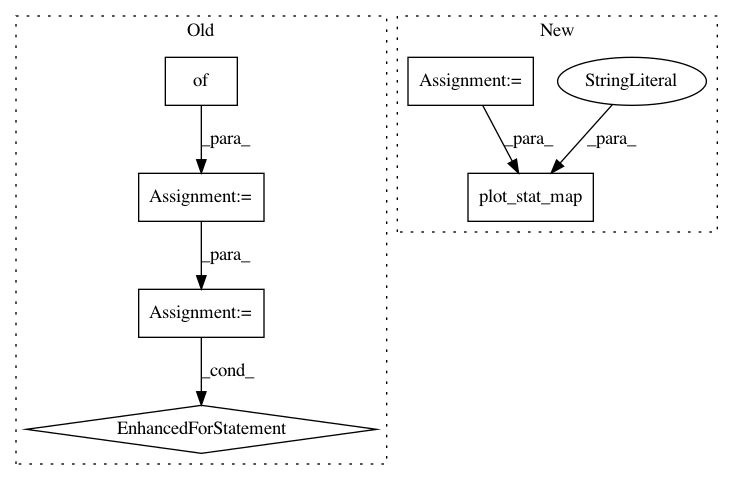

98c59811ac8ac88362b6118794b598ed92682eb7,examples/decoding/plot_poldrack_space_net.py,,,#,11
Before Change
////// Fit and predict ////////////////////////////////////////////////////////////////////////////////////////////////////////////////////
from nilearn.decoding import SpaceNetRegressor
penalties = ["smooth-lasso", "tv-l1"]
decoders = {}
for penalty in penalties:
decoder = SpaceNetRegressor(mask=mask_img, penalty=penalty,
eps=1e-1, // prefer large alphas
memory="cache", verbose=2)
decoder.fit(X, y) // fit
decoders[penalty] = decoder
////// Visualization //////////////////////////////////////////////////////////////////////////////////////////////////////////////////////////
import matplotlib.pyplot as plt
from nilearn.plotting import plot_stat_map
from nilearn.image import mean_img
for penalty, decoder in decoders.iteritems():
plot_stat_map(mean_img(decoder.coef_img_), title=penalty,
display_mode="yz", cut_coords=[20, -2])
plt.show()
After Change
////// Fit TV-L1 //////////////////////////////////////////////////////////////////////////////////////////////////////////////////////////////////
penalty = "tv-l1"
decoder = SpaceNetRegressor(mask=mask_img, penalty=penalty,
eps=1e-1, // prefer large alphas
memory="cache", verbose=2)
decoder.fit(X, y) // fit
////// Visualize TV-L1 weights
plot_stat_map(mean_img(decoder.coef_img_), title=penalty, display_mode="yz",
cut_coords=[20, -2])
plt.show()
In pattern: SUPERPATTERN
Frequency: 3
Non-data size: 6
Instances
Project Name: nilearn/nilearn
Commit Name: 98c59811ac8ac88362b6118794b598ed92682eb7
Time: 2015-07-28
Author: elvis.dohmatob@inria.fr
File Name: examples/decoding/plot_poldrack_space_net.py
Class Name:
Method Name:
Project Name: nilearn/nilearn
Commit Name: 235e5529f9eb0a941b0712b6562308a936cd326f
Time: 2015-12-02
Author: dkamalakarreddy@gmail.com
File Name: examples/connectivity/plot_extract_regions_statistical_maps.py
Class Name:
Method Name:
Project Name: nilearn/nilearn
Commit Name: 49257721ec65c78965df63152b8933e9baebd4a6
Time: 2015-07-28
Author: elvis.dohmatob@inria.fr
File Name: examples/decoding/plot_poldrack_space_net.py
Class Name:
Method Name: